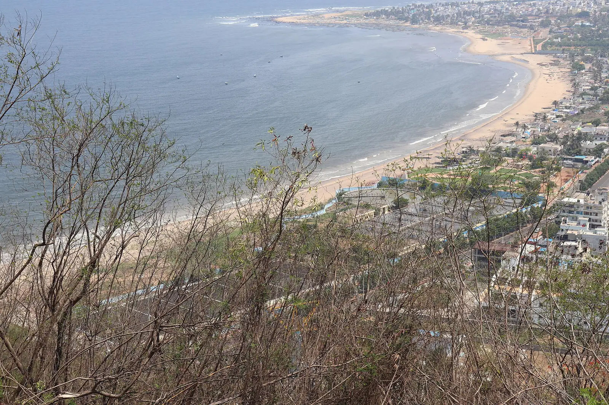

Day 2 · Stop 05 · Hilltop park ★ Main stop
🕒 Day 2 · 8:00 AM – 12:00 PM may shift
Kailasagiri
Hilltop park above the city
A 173 m hilltop park with a ropeway, a glass skybridge and sweeping sea views.
- 173 m above the city
- A 350 m ropeway
- A 55 m glass skybridge
About Kailasagiri
Kailasagiri is a hilltop park developed by VMRDA across about 380 acres of native trees and gardens. The hill rises to 173 metres and looks out over the whole city, Beach Road and the long curve of the Bay of Bengal.
A 350-metre ropeway, the first of its kind in Andhra Pradesh, carries visitors up the hill, and a 55-metre glass skybridge on the summit hangs out over the view. Giant white statues of Shiva and Parvati greet you near the entrance.
The Andhra Pradesh government named it the state's 'Best Tourist Spot' in 2003, and around three lakh visitors come every year. The whole hill is a plastic-free zone.
What we'll see
- Riding the ropeway up the hill
- Walking out on the glass skybridge
- The giant Shiva and Parvati statues
- Viewpoints over the city and the coastline
Photo gallery
.jpg){kind=link}
.jpg){kind=link}


Crew plan · Day 2 · Stop 5 of 8
8:00 AM – 12:00 PM · Ropeway cable car · Glass skybridge · Day 2 times may shift
Day 2's big one: ropeway up, skybridge photos, and the group shot with the whole coastline behind us.
Open in Google MapsTips
- Stay for sunset and the city lights coming on.
- Leave the plastic behind: it's a plastic-free zone.
- Ropeway queues get long on weekends.